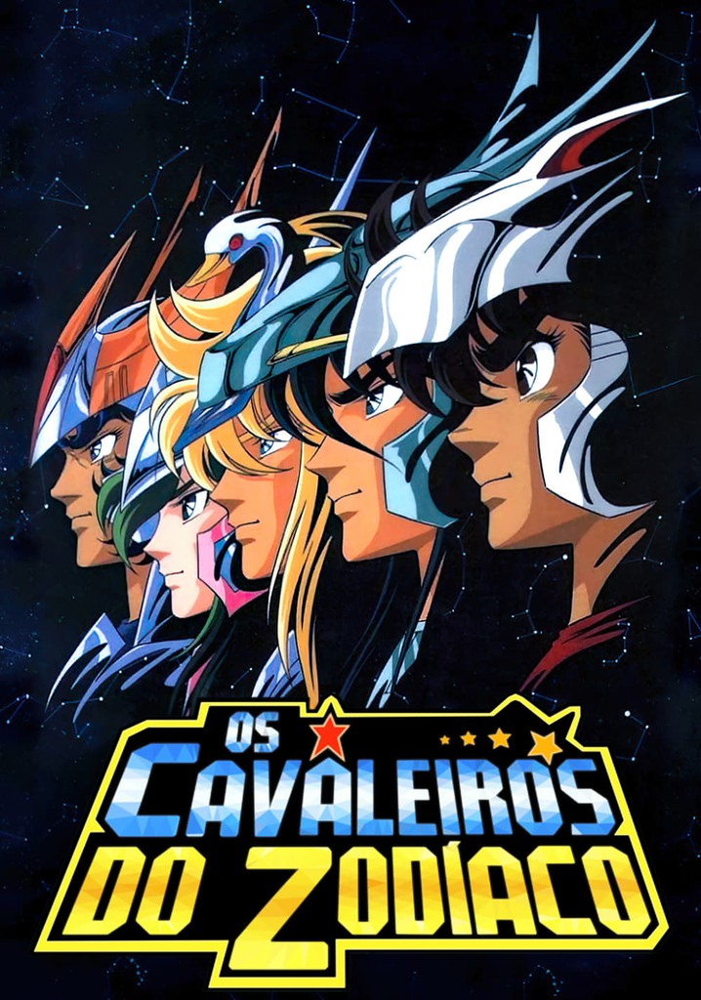

Bem-vindo ao Mundo dos Cavaleiros do Zodíaco: Next Dimension
Inicio
Saint Seiya: Next Dimension - Meiō Shinwa (em japonês: 聖闘士星矢 NEXT DIMENSION 冥王神話; romaniz.: Seinto Seiya: Nekusuto Dimenshon - Meiō Shinwa; lit. Santo Seiya: Próxima Dimensão - O Mito do Rei das Trevas), no Brasil: Os Cavaleiros do Zodíaco: Next Dimension - A Saga de Hades, também conhecido simplesmente como Next Dimension, é uma série de mangá japonesa escrita e ilustrada por Masami Kurumada. É a sequência canônica, enquanto também serve como uma prequela do mangá Os Cavaleiros do Zodíaco de Kurumada. A trama principal se passa no século 18 durante a "Guerra Santa" anterior entre a deusa Atena e o deus Hades, e centra-se nas batalhas entre os guerreiros de cada divindade que são conhecidos como os Cavaleiros e os Espectros, respectivamente. É publicada pela Akita Shoten na revista semanal Weekly Shōnen Champion em datas irregulares. Também é conhecido por seu subtítulo alternativo Galaxy Myth (銀河神話 Ginga Shinwa?), que é usado durante a publicação para se referir aos segmentos do enredo ambientado no século 20, em oposição ao subtítulo Mito de Hades, que se refere ao segmentos fixados no século XVIII.
Ao contrário da obra original, Next Dimension é publicado em cores em suas compilações de volume, com os capítulos impressos na revista Shōnen Champion originalmente publicados no formato preto e branco padrão da mídia de quadrinhos japonesa; com páginas coloridas ocasionais. No entanto, a versão digital dos capítulos é publicada em cores, embora em um esquema de cores simplificado que é posteriormente melhorado e realçado nas compilações. Assim, Next Dimension é notável como um dos poucos títulos do gênero a ser publicado em cores atualmente.
Enredo
Next Dimension retoma a história do mangá Saint Seiya original de Kurumada por meio de um flashback da batalha final dos Cavaleiros de Atena no arco de Hades. Durante a batalha, Hades, o deus do submundo, reconhece Seiya como o inimigo temido que ele enfrentou há milênios, nas eras mitológicas, reencarnado nesta época. O deus é lembrado de encarnações passadas e, em seguida, relembra os eventos que ocorreram na última guerra entre Atena e ele mesmo, 243 anos antes. Naquela época, um menino chamado Tenma era um dos guerreiros lendários de Atena, os Cavaleiros. Ele também foi a encarnação de Seiya de Pégaso no século 18. Tenma era o melhor amigo de um garoto chamado Alone, o receptáculo escolhido por Hades para habitar naquela época. Como Alone tornou-se possuído por Hades, Tenma se aventura a resgatá-lo, encontrando Shion de Áries e Dohko de Libra e, eventualmente, sofrendo derrota nas mãos de dois dos Juízes do Submundo. Sobrevivendo ao encontro, os Cavaleiros retornam ao Santuário de Atena para elaborar uma estratégia para impedir que Hades complete suas maquinações.
Atualmente, Seiya de Pégaso está sob uma maldição de Hades que o matará em três dias. Atena decide salvar Seiya e é acompanhada pelo Cavaleiro, Shun de Andrômeda. Eles viajam de volta no tempo com a ajuda de Chronos, mas são enviados mais ao passado do que o pretendido para que acabem durante a guerra santa anterior. Eles são separados e Atena é transformada em um bebê, mas ela é salva do perigo por um Cavaleiro, pois o líder do Santuário está em aliança com Hades.
Tenma conhece Shun e é convencido da situação, e eles correm para resgatar Atena. Em seu caminho pelas doze casas do Zodíaco, eles encontram e lutam contra vários dos poderosos Cavaleiros de Ouro e também Espectros, guerreiros de Hades. Eles também se juntam aos companheiros de Shun, Ikki, Shiryu e Hyoga. Outra ameaça iminente é revelada na forma do 13º Cavaleiro de Ouro de Serpentário.
Produção
Masami Kurumada anunciou pela primeira vez o início da continuação de sua famosa série Os Cavaleiros do Zodíaco em 2006. Em 21 de abril, ele postou uma imagem de Hades, Senhor do Submundo, em seu blog. Capítulos curtos passaram a ser publicados uma ou até duas vezes por mês devido ao seu lançamento esporádico até 4 de janeiro de 2007, quando o próximo capítulo não foi lançado até 2 de agosto de 2007. A série manteve lançamentos esporádicos, com breves intervalos de publicação semana a semana, mas Masami Kurumada atualiza seu blog após um intervalo maior para mostrar os próximos capítulos. No Volume 2, em sua mensagem pessoal, Masami Kurumada pede desculpas pelo atraso do segundo volume, revelando que ele estava doente por um longo tempo na primavera de 2009.
Saint Seiya: Next Dimension foi concebido por Masami Kurumada como uma prequela de seu mangá Saint Seiya, partindo de elementos revelados nele, mas nunca mais desenvolvidos e explorados, portanto, ele começou a escrever e desenhar Next Dimension abrindo o enredo em um prólogo, com um flashback da última batalha de seu mangá original, contido no vol. 28. Além disso, o conceito original da prequela era trabalhar simultaneamente com Saint Seiya: The Lost Canvas, de Shiori Teshirogi, como uma interpretação multi-ângulo do enredo, mas essa abordagem foi rapidamente abandonada, pois ambos os trabalhos divergiram muito. No lançamento do primeiro volume coletado (tankōbon) da série, Next Dimension foi confirmado como canônico dentro do universo e cronologia concebido por Kurumada para Saint Seiya.
Seguindo o estilo tradicional de escrita e desenho de Masami Kurumada, o enredo se desenrola na narrativa típica de mangá shōnen. Além disso, cada capítulo é apresentado em cores. O primeiro capítulo foi inicialmente chamado de Prólogo ①, no entanto, o "①" foi removido no primeiro volume coletado. Durante os primeiros 14 capítulos, a borda das páginas foi colorida para parecer um céu noturno estrelado, isso foi alterado para branco padrão na parte 14 e nos capítulos seguintes, bem como um padrão em volumes compilados. As partes 15 e 16 foram publicadas em formato preto e branco, complementadas por uma imagem colorida cada. As seguintes partes continuaram sendo lançadas em preto e branco acompanhadas de várias páginas coloridas. As partes publicadas em preto e branco estarão disponíveis em cores em seus respectivos volumes de compilação. Certos objetos e informações que foram publicados anteriormente na Enciclopédia Saint Seiya são usados na história, como uma das 88 armaduras de Atena, a Armadura de Prata de Taça, embora com um novo design. Os personagens Artemis e Tōma foram criados por Masami Kurumada e introduzidos pela primeira vez no quinto filme de Saint Seiya, que serviria como uma continuação para o enredo. Mas o filme não recebeu as sequências planejadas, então Kurumada incorporou os personagens em Saint Seiya: Next Dimension, tornando-se a encarnação canônica dos referidos personagens.
União com outros mangás de Saint Saiya
Como a continuação canônica do trabalho de Saint Seiya de Kurumada, "Next Dimension" exerceu influência por meio de vários trabalhos derivados da franquia. Notável é o uso de vários personagens recentemente introduzidos por Kurumada, pelos autores dos referidos trabalhos derivados, aparecendo como personagens convidados ou com uma conexão com o passado ou história dos personagens principais; Izō de Capricórnio, Deathtoll de Cancer, Shoryu, que aparecem em Saint Seiya Episode G Assassin por Megumu Okada . Calisto, Artemis, Hecate, Satellitales, aparecem em Saintia Sho de Chimaki Kuori.
No Episódio G Assassin também fala sobre os eventos da guerra santa contra Hades do século 18° de Saint Seiya Next Dimension, em Saintia Sho também há lugares e armaduras de Saint Seiya Next Dimension.
No Saint Seiya Final Edition (edição final do mangá Saint Seiya), no capítulo especial Origin que será incluído nesta edição, é mostrada a imagem dos 12 Cavaleiros de Ouro do século 18° que são os de Saint Seiya Next Dimension. Conjunção definitiva e oficial entre as duas obras.
Midias
Mangá
Um prólogo, 102 capítulos e dois capítulos especiais adicionais foram lançados até o momento desde 2006 e estão sendo publicados coletivamente na forma de tankōbon. A décima segunda compilação foi lançada em 8 de maio de 2018. O primeiro episódio especial de Next Dimension foi publicado em 19 de junho de 2014 para comemorar o lançamento do filme de animação Os Cavaleiros do Zodíaco: A Lenda do Santuário. O segundo capítulo especial foi lançado um ano depois, em 16 de julho de 2015. Ambos os capítulos especiais foram compilados no décimo volume.
No Brasil, a publicação a publicação do mangá é realizada pela editora JBC desde setembro de 2011 e, em abril de 2022, encontra-se no volume 12.
Merchandising
Em setembro de 2017, mercadorias relacionadas a Saint Seiya: Next Dimension ainda eram incomuns. Além das compilações tankobōn, apenas algumas cartas promociOs Cavaleiros do Zodíaco ilustrados pelo autor Kurumada e ocasionalmente uma mensagem dele e sua assinatura. Além disso, vários pôsteres promocionais com ilustrações da série foram lançados junto com várias publicações. Uma skin para a capa protetora intercambiável do Iphone 5 foi lançada em junho de 2014 com uma imagem de Atena e Seiya.
Em uma mensagem incluída na edição de publicação do capítulo 84 de Next Dimension, Masami Kurumada provoca o lançamento de uma figura colecionável de Odysseus de Serpentário em um futuro próximo.
Em 20 de setembro de 2017, foi revelado no site Tamashii Nations, que a figura colecionável mencionada por Kurumada é um lançamento especial e parte da linha Cloth Myth EX, e será de fato uma figura do Cavaleiro de Ouro de Serpentário, a ser lançado no formato Original Color Edition, o criador Kurumada esteve envolvido no desenvolvimento da figura como supervisor, embora, a figura não seja modelada à semelhança de Odysseus, pois se destina a representar a imagem do Cavaleiro de Ouro de Serpentário da lenda e não Odysseus ou Asclepios especificamente. Baseado no design original de Kurumada de seu mangá e não de uma adaptação de anime como é usual para a linha; a figura é a primeira figura colecionável já lançada de Next Dimension e do personagem também.
Videogame
Uma música para Next Dimension intitulada "End or Next", foi composta, para o videogame móvel Saint Seiya: Awakening da Tencent, com vocais de Nobuo Yamada, o vocalista original de Pegasus Fantasy. Odysseus de Serpentário também é apresentado como um personagem no jogo, dublado por Yuichi Nakamura, assim como os Cavaleiros de Ouro Shijima de Virgem, Kaiser de Leo, Deathtoll de Câncer, Tenma de Pégaso, Écarlate de Escorpião, Gestalt de Sagitário também são personagens do jogo. Vários desses personagens têm sequências animadas feitas para eles no jogo em computação gráfica 3D.
Recepção
Durante a primeira semana, o primeiro volume do mangá vendeu 30.618 cópias no Japão, ocupando a vigésima segunda colocação entre os mangás mais vendidos em fevereiro de 2009. Na semana seguinte vendeu 57.426 cópias, mas foi apenas o vigésimo sétimo mais vendido daquele mês. Após sua primeira semana o " segundo volume" coloque no 9º lugar da maioria de volume comprado do manga de março em Japão. Durante sua primeira semana, o " terceiro volume" do manga vendido 44.200 cópias em Japão e estado no 17º lugar do vendido mais em dezembro 2010. De acordo com os dados Akita Shoten publicado na revisão em 2011, o primeiro 3 tankobon da Next Dimension seguinte alcançaram em Japão as 300.000 cópias vendidas.
Em média, os volumes de Next Dimension são volumes com boas vendas no Japão, superando as vendas dos gaidens de The Lost Canvas, Saintia Sho e Episódio G.
Eventos
Para o evento do 50º aniversário da revista Weekly Shōnen Champion, o Ophiuchus Gold Cloth foi recriado em uma escala 1:1, cerca de 2,3m de altura; uma galeria também exibiu várias peças de arte de autoria de Masami Kurumada e tiradas de Next Dimension e figuras colecionáveis do Cavaleiro de Ouro de Serpentário.
Outras Séries
"Os Cavaleiros do Zodíaco: Episode.G" é outro spin-off da série original "Os Cavaleiros do Zodíaco", criada por Masami Kurumada. Escrito e ilustrado por Megumu Okada, o mangá foi publicado entre 2002 e 2013.

"Os Cavaleiros do Zodíaco", também conhecido como "Saint Seiya", é uma série de anime e mangá criada por Masami Kurumada. A história gira em torno de jovens guerreiros chamados Cavaleiros, que juraram proteger a deusa grega Atena em suas batalhas contra as forças do mal. Cada Cavaleiro veste uma armadura baseada em uma constelação do zodíaco.
"Os Cavaleiros do Zodíaco: The Lost Canvas" é um mangá e uma série de anime spin-off da franquia original "Os Cavaleiros do Zodíaco", criada por Masami Kurumada. Escrito e ilustrado por Shiori Teshirogi, o mangá foi publicado entre 2006 e 2011, enquanto a adaptação para anime foi lançada em 2009.